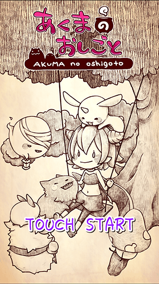
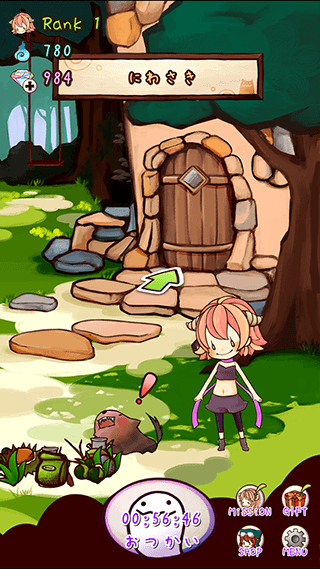
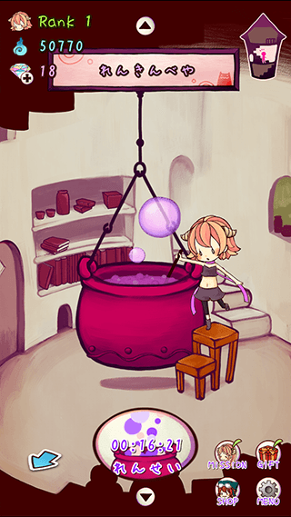
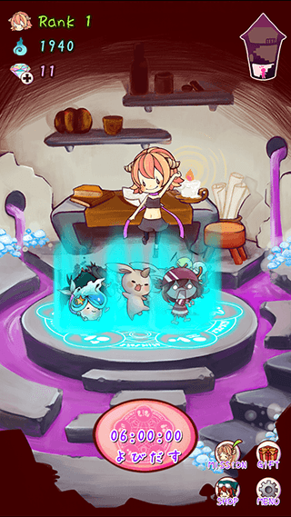

あくまのおしごと

| タイトル | あくまのおしごと |
|---|---|
| 略称 | あくまごと |
| ジャンル | おつかい＆れんきん |
| 配信開始日 |
Android版 : 未定 iOS版 : 未定 |
| 配信元 | Google Play App Store |
| その他 |
【Twitter】 まじょのおしごと[公式] 【ブログ】 おけやゲームブログ 【グッズ販売】 おけやwebショップ |
ダウンロード
準備中
スクリーンショット




あらすじ
むかしむかし あるところに
エイダという なまえの あくまの しょうじょが おりました
アルファベートのもり とよばれる
おおきくも ちいさくもない そのもりの おくで
いちにんまえの あくまを めざして
にちや どりょくを しておりました
そんな あるひ エイダは エステルに であいます
エステルは エイダの おかあさんの おねえさんです
その であいは エイダに おおきな しょうげきを あたえました
「こ これが おとなの みりょく……ッ！！」
「あたしも あんな ステキな あくまに なりたいッ！！」
そうして あこがれの エステルのような あくまになるための
おしごとの ひびが はじまるのでした
さてさて はたして
エイダは いちにんまえの あくまに なれるのでしょうか？